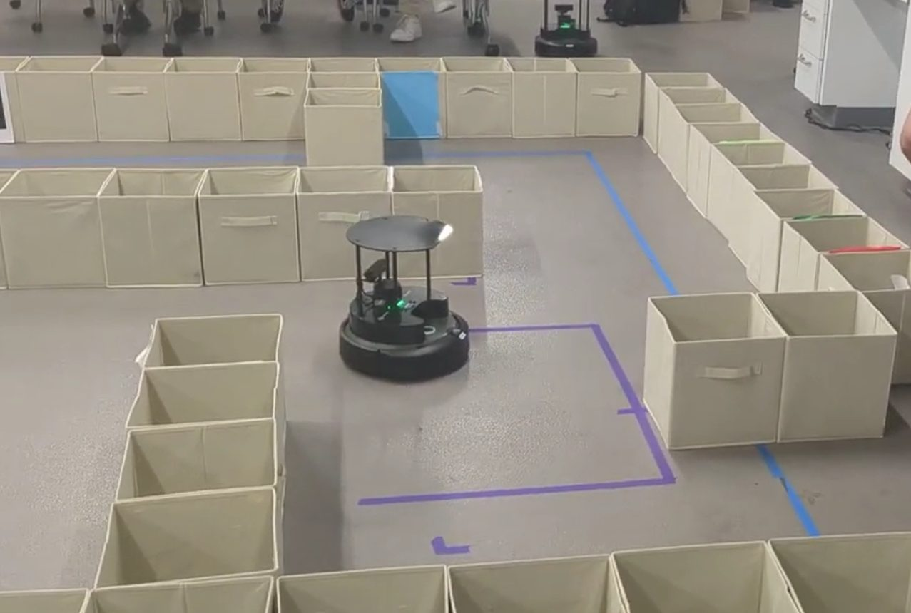
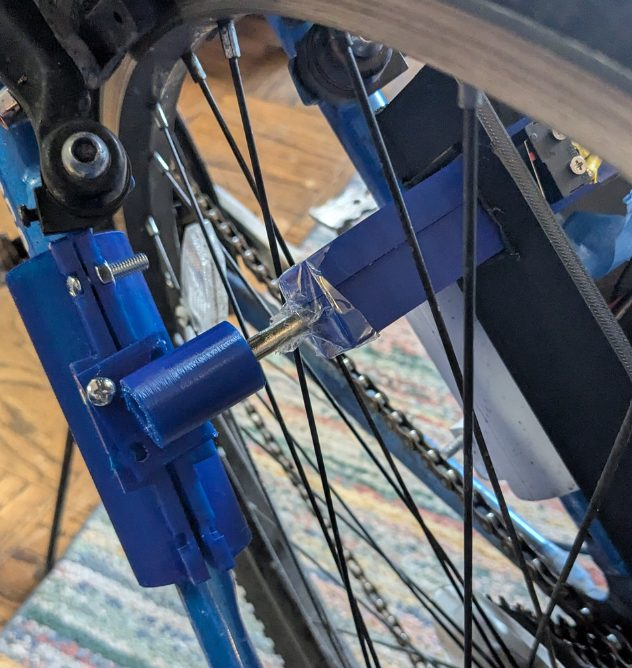

Portfolio
Dror Kosowsky-Sachs
Mechanical Engineering & Robotics student at the University of Maryland, graduating in Spring 2027.
I fabricate, wire, and debug robots — from custom PCBs to underwater propulsion. Each project below links to a full write-up covering the design, the build, and what I learned.
- Emaildrorks@terpmail.umd.edu
- LinkedInlinkedin.com/in/dror-kosowsky-sachs
- ResumeResume (PDF)
Projects
-

Fish-Inspired UUV
Undergraduate research (in progress): an untethered, fish-inspired UUV whose tail fin is driven by a 4-DOF parallel manipulator, with a custom power PCB and a ROS 2 control stack.
-

Autonomous Chess Board
A chess board that plays back against you — computer vision and a magnet gantry move the pieces.
-

Autonomous Maze Navigation
ENAE450 team project: a TurtleBot 4 that escapes a maze using SLAM and Nav2 when mapped, and a LiDAR right-hand wall follower when unmapped.
-

Biometric Bike Lock
A bike lock that only unlocks for the right fingerprint and the right key fob.
-

Robotic Fish — Flipper Propulsion
An early underwater fish built in UMD's Hydrodynamics Lab to test flipper-based propulsion and tunable tail stiffness.